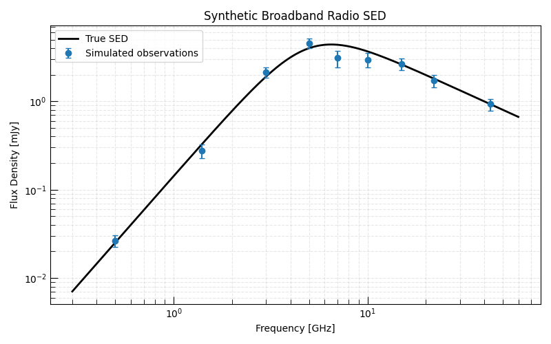
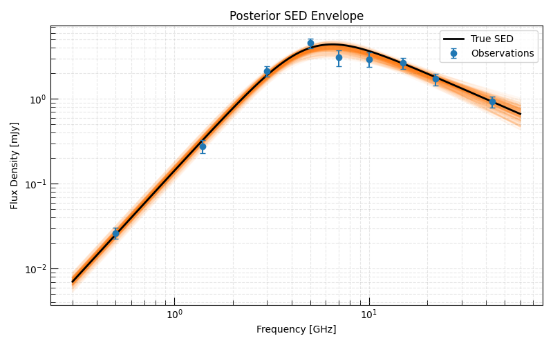
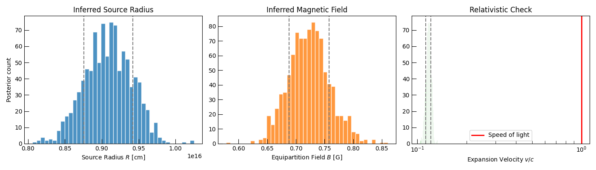

Note
Go to the end to download the full example code.
From SED to Source Size: The Inverse Closure Workflow#
Radio astronomers often measure a synchrotron SED with uncertainties and want to estimate the source radius, magnetic field, and minimum energy without direct angular resolution (e.g. no VLBI size measurement). This workflow — fitting the SED and propagating the fit uncertainties through the inverse closure — is the standard approach in the literature.
This example demonstrates the complete pipeline:
Generate a realistic observed SED with measurement uncertainties.
Fit the SED using
Synchrotron_SSA_SBPL_Modeland MCMC to extract posterior distributions of \(F_{\rm pk}\), \(\nu_{\rm pk}\).Propagate the posteriors through the inverse closure to obtain a posterior distribution of source radius \(R\).
Check the expansion velocity \(v = R/t\) as a fraction of the speed of light — a simple test for relativistic ejecta.
Hint
This workflow is particularly powerful when applied to a time series of epochs: the evolution of \(R(t)\) directly measures the shock expansion velocity. For multi-epoch usage see the Multi-Epoch SED Fitting: Tracking Shock Evolution example.
Relevant API#
Synchrotron_SSA_SBPL_Modelfrom_params_to_physics()InferenceProblemEmceeSampler
Setup#
import matplotlib.pyplot as plt
import numpy as np
from astropy import constants as const
from astropy import units as u
from triceratops.models.SEDs.synchrotron import Synchrotron_SSA_SBPL_Model
from triceratops.radiation.synchrotron.SEDs import PowerLaw_SSA_SynchrotronSED
from triceratops.utils.plot_utils import set_plot_style
set_plot_style()
Simulate a Realistic Observed SED#
We simulate a single-epoch broadband radio SED of a radio transient — say a Type Ibc supernova observed 30 days post-explosion at 20 Mpc. The true physical parameters are:
Source age: \(t = 30\) days
True radius: \(R = 3 \times 10^{16}\) cm
True B-field: \(B = 0.5\) G
These correspond to an expansion velocity \(v = R/t \approx 0.04 c\) — sub-relativistic.
sed_model = Synchrotron_SSA_SBPL_Model()
# True SED parameters (from a forward closure calculation with B=0.5 G, R=3e16 cm)
true_params = {
"norm": 8.0 * u.mJy,
"nu_break": 5.0 * u.GHz,
"p": 3.0,
"s": -1.0,
}
# Observing frequencies spanning 0.5 GHz (GMRT/MeerKAT) to 43 GHz (VLA)
frequencies = u.Quantity([0.5, 1.4, 3.0, 5.0, 7.0, 10.0, 15.0, 22.0, 43.0], u.GHz)
# Simulate with 15% flux errors — realistic for calibration-limited observations
rng = np.random.default_rng(42)
noise_frac = 0.15
true_flux = sed_model.forward_model({"frequency": frequencies}, true_params).flux_density
noise = rng.normal(size=true_flux.size, scale=noise_frac) * true_flux
obs_flux = true_flux + noise
obs_err = noise_frac * true_flux
print("=== Simulated observations ===")
for f, flux, err in zip(frequencies, obs_flux, obs_err):
print(f" {f.to_value(u.GHz):5.1f} GHz: {flux.to_value(u.mJy):.2f} ± {err.to_value(u.mJy):.2f} mJy")
=== Simulated observations ===
0.5 GHz: 0.03 ± 0.00 mJy
1.4 GHz: 0.28 ± 0.05 mJy
3.0 GHz: 2.13 ± 0.29 mJy
5.0 GHz: 4.56 ± 0.60 mJy
7.0 GHz: 3.09 ± 0.66 mJy
10.0 GHz: 2.96 ± 0.55 mJy
15.0 GHz: 2.66 ± 0.39 mJy
22.0 GHz: 1.72 ± 0.27 mJy
43.0 GHz: 0.93 ± 0.14 mJy
Visualize the Synthetic Data#
freqs_plot = np.geomspace(0.3, 60.0, 300) * u.GHz
true_curve = sed_model.forward_model({"frequency": freqs_plot}, true_params).flux_density
fig, ax = plt.subplots(figsize=(8, 5))
ax.loglog(freqs_plot.to_value(u.GHz), true_curve.to_value(u.mJy), color="black", lw=2, label="True SED")
ax.errorbar(
frequencies.to_value(u.GHz),
obs_flux.to_value(u.mJy),
yerr=obs_err.to_value(u.mJy),
fmt="o",
color="C0",
capsize=3,
label="Simulated observations",
)
ax.set_xlabel("Frequency [GHz]")
ax.set_ylabel("Flux Density [mJy]")
ax.set_title("Synthetic Broadband Radio SED")
ax.legend()
ax.grid(True, which="both", ls="--", alpha=0.3)
plt.tight_layout()
plt.show()

Fit the SED with MCMC#
We set up an InferenceProblem to fit the SED
parameters and sample the posterior with EmceeSampler.
from astropy.table import Table
from triceratops.data import InferenceData
from triceratops.data.photometry import RadioPhotometryEpochContainer
from triceratops.inference import GaussianCensoredLikelihood
from triceratops.inference.problem import InferenceProblem
from triceratops.inference.sampling.mcmc import EmceeSampler
# Build a data table
data_table = Table()
data_table["freq"] = frequencies
data_table["flux_density"] = obs_flux
data_table["flux_density_error"] = obs_err
data_table["flux_upper_limit"] = np.full(frequencies.size, np.nan) * u.mJy
photometry = RadioPhotometryEpochContainer(data_table)
inference_data = InferenceData.from_table(
sed_model,
photometry.table,
variables={"frequency": "freq"},
observables={
"flux_density": ("flux_density", "flux_density_error", "flux_upper_limit", None),
},
)
likelihood = GaussianCensoredLikelihood(model=sed_model, data=inference_data)
problem = InferenceProblem(likelihood=likelihood)
problem.set_prior("norm", "uniform", lower=0.01 * u.mJy, upper=100.0 * u.mJy)
problem.set_prior("nu_break", "uniform", lower=0.5 * u.GHz, upper=50.0 * u.GHz)
problem.set_prior("p", "uniform", lower=2.0, upper=5.0)
problem.parameters["s"].initial_value = -1.0
problem.parameters["norm"].initial_value = 1e-3
problem.parameters["s"].freeze = True
sampler = EmceeSampler(problem, n_walkers=16)
result = sampler.run(8_000, progress=True)
samples = result.get_flat_samples(burn=2000, thin=5)
print(f"\nPosterior samples shape: {samples.shape}")
0% | | 🦖 0/8000 [00:00<?, ?it/s]
1% | | 🦖 53/8000 [00:00<00:15, 524.79it/s]
1% |▏ | 🦖 106/8000 [00:00<00:15, 510.19it/s]
2% |▏ | 🦖 158/8000 [00:00<00:15, 497.34it/s]
3% |▎ | 🦖 208/8000 [00:00<00:15, 492.04it/s]
3% |▎ | 🦖 258/8000 [00:00<00:15, 487.34it/s]
4% |▍ | 🦖 307/8000 [00:00<00:15, 486.70it/s]
4% |▍ | 🦖 356/8000 [00:00<00:15, 484.69it/s]
5% |▌ | 🦖 405/8000 [00:00<00:15, 484.32it/s]
6% |▌ | 🦖 454/8000 [00:00<00:15, 485.10it/s]
6% |▋ | 🦖 503/8000 [00:01<00:15, 485.05it/s]
7% |▋ | 🦖 552/8000 [00:01<00:15, 485.36it/s]
8% |▊ | 🦖 601/8000 [00:01<00:15, 485.77it/s]
8% |▊ | 🦖 650/8000 [00:01<00:15, 484.19it/s]
9% |▊ | 🦖 699/8000 [00:01<00:15, 483.51it/s]
9% |▉ | 🦖 748/8000 [00:01<00:15, 483.19it/s]
10% |▉ | 🦖 797/8000 [00:01<00:14, 483.45it/s]
11% |█ | 🦖 846/8000 [00:01<00:14, 482.44it/s]
11% |█ | 🦖 895/8000 [00:01<00:14, 483.00it/s]
12% |█▏ | 🦖 944/8000 [00:01<00:14, 484.81it/s]
12% |█▏ | 🦖 993/8000 [00:02<00:14, 486.05it/s]
13% |█▎ | 🦖 1042/8000 [00:02<00:14, 486.91it/s]
14% |█▎ | 🦖 1091/8000 [00:02<00:14, 486.70it/s]
14% |█▍ | 🦖 1140/8000 [00:02<00:14, 487.28it/s]
15% |█▍ | 🦖 1189/8000 [00:02<00:13, 487.62it/s]
15% |█▌ | 🦖 1238/8000 [00:02<00:13, 486.61it/s]
16% |█▌ | 🦖 1288/8000 [00:02<00:13, 488.02it/s]
17% |█▋ | 🦖 1337/8000 [00:02<00:13, 486.91it/s]
17% |█▋ | 🦖 1387/8000 [00:02<00:13, 488.19it/s]
18% |█▊ | 🦖 1436/8000 [00:02<00:13, 487.88it/s]
19% |█▊ | 🦖 1485/8000 [00:03<00:13, 487.85it/s]
19% |█▉ | 🦖 1534/8000 [00:03<00:13, 488.31it/s]
20% |█▉ | 🦖 1583/8000 [00:03<00:13, 488.37it/s]
20% |██ | 🦖 1632/8000 [00:03<00:13, 488.66it/s]
21% |██ | 🦖 1682/8000 [00:03<00:12, 489.64it/s]
22% |██▏ | 🦖 1731/8000 [00:03<00:12, 489.37it/s]
22% |██▏ | 🦖 1780/8000 [00:03<00:12, 488.86it/s]
23% |██▎ | 🦖 1829/8000 [00:03<00:12, 486.86it/s]
23% |██▎ | 🦖 1878/8000 [00:03<00:12, 487.37it/s]
24% |██▍ | 🦖 1928/8000 [00:03<00:12, 488.24it/s]
25% |██▍ | 🦖 1977/8000 [00:04<00:12, 487.66it/s]
25% |██▌ | 🦖 2027/8000 [00:04<00:12, 488.88it/s]
26% |██▌ | 🦖 2076/8000 [00:04<00:12, 488.18it/s]
27% |██▋ | 🦖 2125/8000 [00:04<00:12, 488.26it/s]
27% |██▋ | 🦖 2174/8000 [00:04<00:11, 488.58it/s]
28% |██▊ | 🦖 2223/8000 [00:04<00:11, 488.84it/s]
28% |██▊ | 🦖 2272/8000 [00:04<00:11, 489.06it/s]
29% |██▉ | 🦖 2321/8000 [00:04<00:11, 487.93it/s]
30% |██▉ | 🦖 2370/8000 [00:04<00:11, 487.51it/s]
30% |███ | 🦖 2419/8000 [00:04<00:11, 487.26it/s]
31% |███ | 🦖 2468/8000 [00:05<00:11, 487.23it/s]
31% |███▏ | 🦖 2517/8000 [00:05<00:11, 487.17it/s]
32% |███▏ | 🦖 2566/8000 [00:05<00:11, 485.91it/s]
33% |███▎ | 🦖 2615/8000 [00:05<00:11, 486.11it/s]
33% |███▎ | 🦖 2664/8000 [00:05<00:10, 486.16it/s]
34% |███▍ | 🦖 2713/8000 [00:05<00:10, 485.74it/s]
35% |███▍ | 🦖 2762/8000 [00:05<00:10, 485.18it/s]
35% |███▌ | 🦖 2811/8000 [00:05<00:10, 483.54it/s]
36% |███▌ | 🦖 2860/8000 [00:05<00:10, 482.15it/s]
36% |███▋ | 🦖 2909/8000 [00:05<00:10, 482.45it/s]
37% |███▋ | 🦖 2958/8000 [00:06<00:10, 482.54it/s]
38% |███▊ | 🦖 3007/8000 [00:06<00:10, 481.28it/s]
38% |███▊ | 🦖 3056/8000 [00:06<00:10, 481.25it/s]
39% |███▉ | 🦖 3105/8000 [00:06<00:10, 482.27it/s]
39% |███▉ | 🦖 3154/8000 [00:06<00:10, 482.16it/s]
40% |████ | 🦖 3203/8000 [00:06<00:09, 483.11it/s]
41% |████ | 🦖 3252/8000 [00:06<00:09, 483.31it/s]
41% |████▏ | 🦖 3301/8000 [00:06<00:09, 483.49it/s]
42% |████▏ | 🦖 3350/8000 [00:06<00:09, 484.37it/s]
42% |████▏ | 🦖 3399/8000 [00:06<00:09, 485.47it/s]
43% |████▎ | 🦖 3448/8000 [00:07<00:09, 486.59it/s]
44% |████▎ | 🦖 3497/8000 [00:07<00:09, 487.03it/s]
44% |████▍ | 🦖 3546/8000 [00:07<00:09, 486.83it/s]
45% |████▍ | 🦖 3595/8000 [00:07<00:09, 486.44it/s]
46% |████▌ | 🦖 3644/8000 [00:07<00:08, 485.86it/s]
46% |████▌ | 🦖 3693/8000 [00:07<00:08, 484.91it/s]
47% |████▋ | 🦖 3742/8000 [00:07<00:08, 483.96it/s]
47% |████▋ | 🦖 3791/8000 [00:07<00:08, 484.58it/s]
48% |████▊ | 🦖 3840/8000 [00:07<00:08, 484.97it/s]
49% |████▊ | 🦖 3889/8000 [00:07<00:08, 484.63it/s]
49% |████▉ | 🦖 3938/8000 [00:08<00:08, 485.48it/s]
50% |████▉ | 🦖 3987/8000 [00:08<00:08, 485.61it/s]
50% |█████ | 🦖 4036/8000 [00:08<00:08, 486.68it/s]
51% |█████ | 🦖 4085/8000 [00:08<00:08, 487.02it/s]
52% |█████▏ | 🦖 4134/8000 [00:08<00:07, 486.54it/s]
52% |█████▏ | 🦖 4183/8000 [00:08<00:07, 486.70it/s]
53% |█████▎ | 🦖 4232/8000 [00:08<00:07, 486.40it/s]
54% |█████▎ | 🦖 4281/8000 [00:08<00:07, 486.69it/s]
54% |█████▍ | 🦖 4330/8000 [00:08<00:07, 487.02it/s]
55% |█████▍ | 🦖 4379/8000 [00:09<00:07, 487.10it/s]
55% |█████▌ | 🦖 4429/8000 [00:09<00:07, 488.34it/s]
56% |█████▌ | 🦖 4478/8000 [00:09<00:07, 487.49it/s]
57% |█████▋ | 🦖 4527/8000 [00:09<00:07, 487.63it/s]
57% |█████▋ | 🦖 4576/8000 [00:09<00:07, 488.25it/s]
58% |█████▊ | 🦖 4625/8000 [00:09<00:06, 487.92it/s]
58% |█████▊ | 🦖 4674/8000 [00:09<00:06, 486.79it/s]
59% |█████▉ | 🦖 4723/8000 [00:09<00:06, 486.77it/s]
60% |█████▉ | 🦖 4772/8000 [00:09<00:06, 487.57it/s]
60% |██████ | 🦖 4821/8000 [00:09<00:06, 487.98it/s]
61% |██████ | 🦖 4870/8000 [00:10<00:06, 487.84it/s]
61% |██████▏ | 🦖 4919/8000 [00:10<00:06, 483.68it/s]
62% |██████▏ | 🦖 4968/8000 [00:10<00:06, 483.18it/s]
63% |██████▎ | 🦖 5017/8000 [00:10<00:06, 484.20it/s]
63% |██████▎ | 🦖 5066/8000 [00:10<00:06, 484.89it/s]
64% |██████▍ | 🦖 5115/8000 [00:10<00:05, 483.51it/s]
65% |██████▍ | 🦖 5164/8000 [00:10<00:05, 484.68it/s]
65% |██████▌ | 🦖 5213/8000 [00:10<00:05, 483.85it/s]
66% |██████▌ | 🦖 5262/8000 [00:10<00:05, 484.68it/s]
66% |██████▋ | 🦖 5311/8000 [00:10<00:05, 484.34it/s]
67% |██████▋ | 🦖 5361/8000 [00:11<00:05, 486.16it/s]
68% |██████▊ | 🦖 5411/8000 [00:11<00:05, 487.39it/s]
68% |██████▊ | 🦖 5460/8000 [00:11<00:05, 487.84it/s]
69% |██████▉ | 🦖 5509/8000 [00:11<00:05, 488.44it/s]
69% |██████▉ | 🦖 5558/8000 [00:11<00:05, 488.00it/s]
70% |███████ | 🦖 5607/8000 [00:11<00:04, 487.96it/s]
71% |███████ | 🦖 5656/8000 [00:11<00:04, 487.00it/s]
71% |███████▏ | 🦖 5705/8000 [00:11<00:04, 486.29it/s]
72% |███████▏ | 🦖 5754/8000 [00:11<00:04, 470.48it/s]
73% |███████▎ | 🦖 5802/8000 [00:11<00:04, 473.11it/s]
73% |███████▎ | 🦖 5851/8000 [00:12<00:04, 475.50it/s]
74% |███████▍ | 🦖 5900/8000 [00:12<00:04, 477.61it/s]
74% |███████▍ | 🦖 5948/8000 [00:12<00:04, 478.21it/s]
75% |███████▍ | 🦖 5997/8000 [00:12<00:04, 479.05it/s]
76% |███████▌ | 🦖 6046/8000 [00:12<00:04, 479.74it/s]
76% |███████▌ | 🦖 6095/8000 [00:12<00:03, 480.97it/s]
77% |███████▋ | 🦖 6144/8000 [00:12<00:03, 481.56it/s]
77% |███████▋ | 🦖 6193/8000 [00:12<00:03, 480.23it/s]
78% |███████▊ | 🦖 6242/8000 [00:12<00:03, 481.28it/s]
79% |███████▊ | 🦖 6291/8000 [00:12<00:03, 480.68it/s]
79% |███████▉ | 🦖 6340/8000 [00:13<00:03, 480.62it/s]
80% |███████▉ | 🦖 6389/8000 [00:13<00:03, 480.74it/s]
80% |████████ | 🦖 6438/8000 [00:13<00:03, 481.96it/s]
81% |████████ | 🦖 6487/8000 [00:13<00:03, 481.88it/s]
82% |████████▏ | 🦖 6536/8000 [00:13<00:03, 482.52it/s]
82% |████████▏ | 🦖 6585/8000 [00:13<00:02, 482.18it/s]
83% |████████▎ | 🦖 6634/8000 [00:13<00:02, 481.68it/s]
84% |████████▎ | 🦖 6683/8000 [00:13<00:02, 482.07it/s]
84% |████████▍ | 🦖 6732/8000 [00:13<00:02, 482.16it/s]
85% |████████▍ | 🦖 6781/8000 [00:13<00:02, 483.03it/s]
85% |████████▌ | 🦖 6830/8000 [00:14<00:02, 482.51it/s]
86% |████████▌ | 🦖 6879/8000 [00:14<00:02, 482.79it/s]
87% |████████▋ | 🦖 6928/8000 [00:14<00:02, 482.99it/s]
87% |████████▋ | 🦖 6977/8000 [00:14<00:02, 483.00it/s]
88% |████████▊ | 🦖 7026/8000 [00:14<00:02, 484.42it/s]
88% |████████▊ | 🦖 7075/8000 [00:14<00:01, 484.38it/s]
89% |████████▉ | 🦖 7124/8000 [00:14<00:01, 485.32it/s]
90% |████████▉ | 🦖 7173/8000 [00:14<00:01, 484.11it/s]
90% |█████████ | 🦖 7222/8000 [00:14<00:01, 485.24it/s]
91% |█████████ | 🦖 7271/8000 [00:14<00:01, 484.70it/s]
92% |█████████▏| 🦖 7320/8000 [00:15<00:01, 483.19it/s]
92% |█████████▏| 🦖 7369/8000 [00:15<00:01, 467.19it/s]
93% |█████████▎| 🦖 7416/8000 [00:15<00:01, 465.95it/s]
93% |█████████▎| 🦖 7466/8000 [00:15<00:01, 473.13it/s]
94% |█████████▍| 🦖 7515/8000 [00:15<00:01, 476.71it/s]
95% |█████████▍| 🦖 7564/8000 [00:15<00:00, 480.04it/s]
95% |█████████▌| 🦖 7613/8000 [00:15<00:00, 481.13it/s]
96% |█████████▌| 🦖 7662/8000 [00:15<00:00, 482.07it/s]
96% |█████████▋| 🦖 7711/8000 [00:15<00:00, 483.05it/s]
97% |█████████▋| 🦖 7760/8000 [00:16<00:00, 483.51it/s]
98% |█████████▊| 🦖 7809/8000 [00:16<00:00, 483.08it/s]
98% |█████████▊| 🦖 7858/8000 [00:16<00:00, 483.67it/s]
99% |█████████▉| 🦖 7907/8000 [00:16<00:00, 483.66it/s]
99% |█████████▉| 🦖 7956/8000 [00:16<00:00, 483.10it/s]
100% |██████████| 🦖 8000/8000 [00:16<00:00, 484.66it/s]
Posterior samples shape: (19200, 3)
Plot Posterior SED Envelope#
Draw 200 samples from the posterior and overlay them on the data to visualize the SED uncertainty.
fig, ax = plt.subplots(figsize=(8, 5))
ax.errorbar(
frequencies.to_value(u.GHz),
obs_flux.to_value(u.mJy),
yerr=obs_err.to_value(u.mJy),
fmt="o",
color="C0",
capsize=3,
label="Observations",
zorder=5,
)
n_draw = 200
idx = rng.choice(samples.shape[0], n_draw, replace=False)
for i in idx:
params = problem.unpack_free_parameters(samples[i])
flux = sed_model.forward_model({"frequency": freqs_plot}, params).flux_density
ax.plot(freqs_plot.to_value(u.GHz), flux.to_value(u.mJy), color="C1", alpha=0.05)
ax.plot(freqs_plot.to_value(u.GHz), true_curve.to_value(u.mJy), color="black", lw=2, label="True SED")
ax.set_xlabel("Frequency [GHz]")
ax.set_ylabel("Flux Density [mJy]")
ax.set_xscale("log")
ax.set_yscale("log")
ax.set_title("Posterior SED Envelope")
ax.legend()
ax.grid(True, which="both", ls="--", alpha=0.3)
plt.tight_layout()
plt.show()

Propagate Posteriors Through the Inverse Closure#
Now comes the key step: for each posterior sample we apply the inverse closure to recover \(R\) and \(B\). This propagates the SED measurement uncertainties into physical parameter uncertainties.
We assume fixed microphysical parameters: \(p=3\), \(\epsilon_e = \epsilon_B = 0.1\).
from tqdm.auto import tqdm
phys_sed = PowerLaw_SSA_SynchrotronSED()
D_L = 20.0 * u.Mpc
epsilon_e = 0.1
epsilon_B = 0.1
p_fixed = 3.0
t_obs = 30.0 * u.day
R_post, B_post = [], []
num_samples = 1_000
indices = rng.choice(samples.shape[0], num_samples, replace=False)
for i in tqdm(indices):
params = problem.unpack_free_parameters(samples[i])
F_pk = params["norm"]
nu_pk = params["nu_break"]
inv = phys_sed.from_params_to_physics(
"optically_thick",
F_peak=F_pk * u.Jy,
nu_peak=nu_pk * u.GHz,
gamma_min=1.0,
gamma_max=1e8,
p=p_fixed,
epsilon_E=epsilon_e,
epsilon_B=epsilon_B,
luminosity_distance=D_L,
f_V=1.0,
pitch_average=True,
)
R_post.append(inv["R"])
B_post.append(inv["B"])
R_post = u.Quantity(R_post).to_value("cm")
B_post = u.Quantity(B_post).to_value("G")
# Expansion velocity posterior
v_post = R_post / t_obs.to_value("s")
v_over_c = v_post / const.c.cgs.value
print("\n=== Physical parameter posteriors ===")
print(
f" R : {np.percentile(R_post, 16):.2e} – {np.percentile(R_post, 50):.2e} – {np.percentile(R_post, 84):.2e} cm"
)
print(
f" B : {np.percentile(B_post, 16):.3f} – {np.percentile(B_post, 50):.3f} – {np.percentile(B_post, 84):.3f} G"
)
print(
f" v/c: {np.percentile(v_over_c, 16):.4f} – {np.percentile(v_over_c, 50):.4f} – {np.percentile(v_over_c, 84):.4f}"
)
0%| | 0/1000 [00:00<?, ?it/s]
2%|▏ | 21/1000 [00:00<00:04, 207.79it/s]
4%|▍ | 42/1000 [00:00<00:04, 207.61it/s]
6%|▋ | 63/1000 [00:00<00:04, 207.89it/s]
8%|▊ | 84/1000 [00:00<00:04, 208.43it/s]
10%|█ | 105/1000 [00:00<00:04, 208.80it/s]
13%|█▎ | 127/1000 [00:00<00:04, 209.39it/s]
15%|█▍ | 148/1000 [00:00<00:04, 208.99it/s]
17%|█▋ | 169/1000 [00:00<00:03, 208.66it/s]
19%|█▉ | 191/1000 [00:00<00:03, 209.08it/s]
21%|██ | 212/1000 [00:01<00:03, 207.60it/s]
23%|██▎ | 233/1000 [00:01<00:03, 207.75it/s]
25%|██▌ | 254/1000 [00:01<00:03, 207.75it/s]
28%|██▊ | 275/1000 [00:01<00:03, 207.95it/s]
30%|██▉ | 296/1000 [00:01<00:03, 207.84it/s]
32%|███▏ | 317/1000 [00:01<00:03, 208.34it/s]
34%|███▍ | 338/1000 [00:01<00:03, 208.55it/s]
36%|███▌ | 359/1000 [00:01<00:03, 208.47it/s]
38%|███▊ | 380/1000 [00:01<00:02, 208.32it/s]
40%|████ | 401/1000 [00:01<00:02, 208.23it/s]
42%|████▏ | 422/1000 [00:02<00:02, 208.10it/s]
44%|████▍ | 443/1000 [00:02<00:02, 208.08it/s]
46%|████▋ | 464/1000 [00:02<00:02, 207.92it/s]
48%|████▊ | 485/1000 [00:02<00:02, 207.52it/s]
51%|█████ | 506/1000 [00:02<00:02, 207.57it/s]
53%|█████▎ | 527/1000 [00:02<00:02, 207.85it/s]
55%|█████▍ | 548/1000 [00:02<00:02, 207.43it/s]
57%|█████▋ | 569/1000 [00:02<00:02, 207.61it/s]
59%|█████▉ | 590/1000 [00:02<00:01, 207.76it/s]
61%|██████ | 611/1000 [00:02<00:01, 207.80it/s]
63%|██████▎ | 632/1000 [00:03<00:01, 207.66it/s]
65%|██████▌ | 653/1000 [00:03<00:01, 207.46it/s]
67%|██████▋ | 674/1000 [00:03<00:01, 207.73it/s]
70%|██████▉ | 695/1000 [00:03<00:01, 208.00it/s]
72%|███████▏ | 716/1000 [00:03<00:01, 206.58it/s]
74%|███████▎ | 737/1000 [00:03<00:01, 206.69it/s]
76%|███████▌ | 758/1000 [00:03<00:01, 206.81it/s]
78%|███████▊ | 779/1000 [00:03<00:01, 207.39it/s]
80%|████████ | 800/1000 [00:03<00:00, 206.91it/s]
82%|████████▏ | 821/1000 [00:03<00:00, 207.31it/s]
84%|████████▍ | 842/1000 [00:04<00:00, 207.07it/s]
86%|████████▋ | 863/1000 [00:04<00:00, 206.91it/s]
88%|████████▊ | 884/1000 [00:04<00:00, 207.25it/s]
90%|█████████ | 905/1000 [00:04<00:00, 207.23it/s]
93%|█████████▎| 926/1000 [00:04<00:00, 207.43it/s]
95%|█████████▍| 947/1000 [00:04<00:00, 207.65it/s]
97%|█████████▋| 968/1000 [00:04<00:00, 206.99it/s]
99%|█████████▉| 989/1000 [00:04<00:00, 206.94it/s]
100%|██████████| 1000/1000 [00:04<00:00, 207.69it/s]
=== Physical parameter posteriors ===
R : 8.76e+15 – 9.09e+15 – 9.42e+15 cm
B : 0.688 – 0.723 – 0.758 G
v/c: 0.1127 – 0.1170 – 0.1212
Physical Parameter Posteriors#
The posterior distributions on \(R\), \(B\), and \(v/c\) quantify how measurement uncertainties in the SED propagate to physical uncertainties.
fig, axes = plt.subplots(1, 3, figsize=(14, 4))
axes[0].hist(R_post, bins=40, color="C0", edgecolor="white", alpha=0.8)
axes[0].axvline(np.percentile(R_post, 16), ls="--", color="gray")
axes[0].axvline(np.percentile(R_post, 84), ls="--", color="gray")
axes[0].set_xlabel(r"Source Radius $R$ [cm]")
axes[0].set_ylabel("Posterior count")
axes[0].set_title("Inferred Source Radius")
axes[1].hist(B_post, bins=40, color="C1", edgecolor="white", alpha=0.8)
axes[1].axvline(np.percentile(B_post, 16), ls="--", color="gray")
axes[1].axvline(np.percentile(B_post, 84), ls="--", color="gray")
axes[1].set_xlabel(r"Equipartition Field $B$ [G]")
axes[1].set_title("Inferred Magnetic Field")
axes[2].hist(v_over_c, bins=40, color="C2", edgecolor="white", alpha=0.8)
axes[2].axvline(np.percentile(v_over_c, 16), ls="--", color="gray")
axes[2].axvline(np.percentile(v_over_c, 84), ls="--", color="gray")
axes[2].axvline(1.0, ls="-", color="red", lw=2, label="Speed of light")
axes[2].set_xlabel(r"Expansion Velocity $v/c$")
axes[2].set_title("Relativistic Check")
axes[2].set_xscale("log")
axes[2].legend()
plt.tight_layout()
plt.show()

Relativistic Check#
A crucial sanity check: if the posterior on \(v/c = R/(ct)\) extends above 1 the source is superluminal — which signals either (a) truly relativistic ejecta requiring a relativistic shock model, (b) an underestimated distance, or (c) a geometry effect (e.g. off-axis viewing).
In this case the inferred \(v/c \sim 0.04\) is comfortably sub-relativistic, consistent with the true input parameters.
Median inferred velocity:
Median v/c = 0.1170 (mildly relativistic)
Total running time of the script: (0 minutes 22.677 seconds)